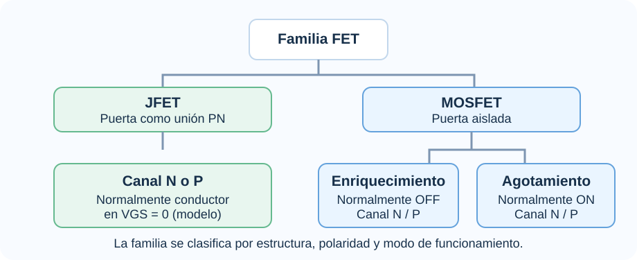
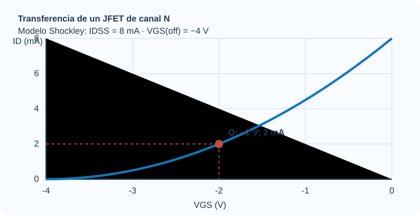
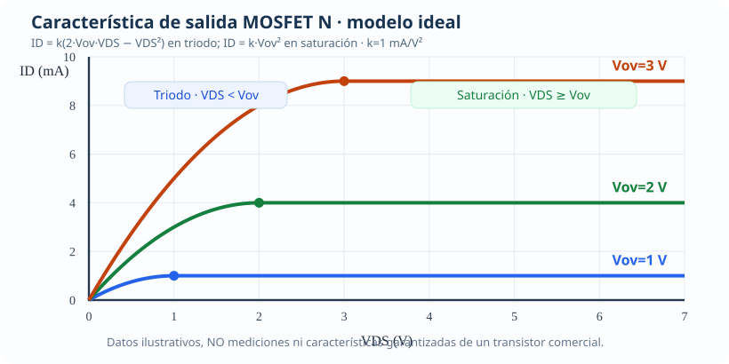
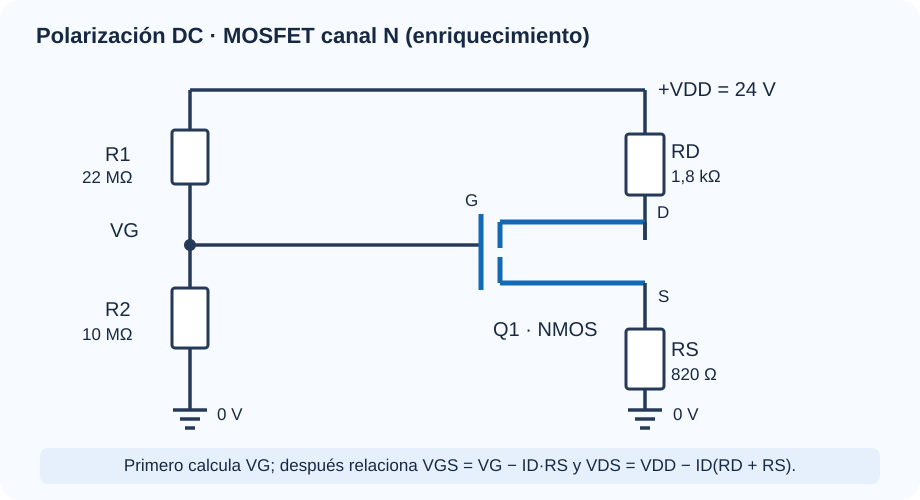
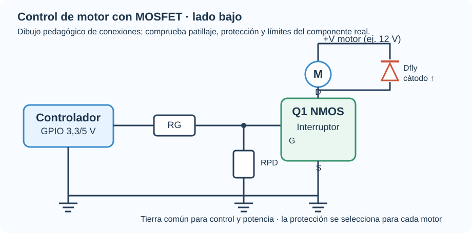

FET sin enredos: de JFET a MOSFET
Ya conoces el BJT. Ahora vamos a descubrir otra forma de controlar corriente: el campo eléctrico. Aprenderás a reconocer la familia FET, distinguir JFET y MOSFET, escoger una región de operación y resolver circuitos sin saltos de cálculo. Terminaremos conectando la teoría con amplificadores, motores y sistemas digitales.
Tu ruta de estudio
Si faltaste a clase, sigue este orden. Si vas a presentar parcial, intenta cada reto antes de abrir la solución.
BJT y FET: dos formas distintas de controlar corriente
Definición técnica. El FET controla el paso de corriente entre drenador (D) y fuente (S) mediante el campo eléctrico asociado al voltaje puerta-fuente, \(V_{GS}=V_G-V_S\). En el MOSFET la puerta está aislada por un dieléctrico; en el JFET la puerta es una unión PN polarizada normalmente en inversa.
| Pregunta | BJT | FET |
|---|---|---|
| ¿Qué lo controla? | Corriente de base y tensión base-emisor. | Campo asociado a \(V_{GS}\). |
| ¿Cómo se llaman los terminales? | Base, colector, emisor. | Puerta, drenador, fuente. |
| ¿Qué ocurre en la entrada? | La unión B-E puede consumir corriente DC. | JFET: unión PN inversa; MOSFET: puerta aislada, con fugas y capacitancia. |
| ¿Qué usa el análisis AC? | \(r_e\), \(r_\pi\), \(g_m\). | \(g_m\), \(r_o\), capacidad de puerta y punto Q. |
| ¿Cómo puede conmutar? | Corte y saturación BJT. | Corte y región óhmica de baja \(R_{DS(on)}\). |
| ¿Qué se consulta antes de diseñar? | \(V_{CE(sat)}\), \(I_B\), potencia, SOA. | \(R_{DS(on)}\) a \(V_{GS}\) real, \(Q_g\), tensión, corriente, SOA. |
Mapa de familia FET

La clasificación depende de la estructura de la puerta, del tipo de canal y del modo de funcionamiento. No todos los FET están apagados a \(V_{GS}=0\).
Un detalle de taller
En un MOSFET de canal N utilizado como interruptor de lado bajo, \(V_{GS}\) se mide entre puerta y fuente. Si la fuente cambia de potencial, la tensión de control también cambia aunque el GPIO permanezca fijo.
Lectura base: Boylestad y Nashelsky, capítulos de FET y polarización; Malvino y Bates, familia de FET y MOSFET; Pleite Guerra y colaboradores, estudio de FET.
JFET: control mediante la zona de agotamiento
Definición técnica. En un JFET de canal N, una puerta PN polarizada en inversa modifica la anchura disponible del canal. Hacer \(V_{GS}\) más negativo ensancha la región de agotamiento y reduce la corriente de drenador.
Esta ecuación de Shockley se emplea dentro del intervalo válido de control para un JFET en la región apropiada de funcionamiento: canal N, \(V_{GS(off)}\le V_{GS}\le 0\). No debe extrapolarse indiscriminadamente fuera de ese intervalo.
Ejemplo guiado · Sensor de alta impedancia
Para un JFET de canal N con \(I_{DSS}=8\,mA\), \(V_{GS(off)}=-4\,V\) y \(V_{GS}=-2\,V\):
1. Comprueba que \(-4\le-2\le0\). 2. Sustituye en Shockley:
3. Interpreta: la tensión inversa redujo la corriente a la cuarta parte del valor a puerta unida a fuente, según el modelo.
Curva de transferencia JFET N · modelo ilustrativo

La curva ilustra la ecuación; no es una medición ni una curva de un componente comercial concreto.
Referencia: modelo de Shockley en Boylestad y Malvino. Para usar un JFET real, sus parámetros \(I_{DSS}\) y \(V_{GS(off)}\) se obtienen de su hoja de datos y tienen dispersión.
¿Qué ocurre dentro de un MOSFET de enriquecimiento?
Un MOSFET de enriquecimiento normalmente no dispone de un canal conductor establecido cuando $V_{GS}=0$. Un campo eléctrico aplicado desde la puerta puede crear una capa de inversión que conecta eléctricamente fuente y drenador. Se trata de una explicación física para el dispositivo de canal N.
La secuencia, sin saltos
- Puerta sin excitación: no se ha inducido el canal N que utiliza el modelo de encendido; hay pequeñas fugas reales aunque en el modelo elemental se usa $I_D\approx0$.
- Se aplica $V_{GS}$ positiva: la puerta, aislada por un dieléctrico, crea un campo eléctrico que reorganiza cargas cerca de la superficie del semiconductor.
- Se supera el umbral: aparece una capa de inversión. La corriente posible dependerá de $V_{GS}$, $V_{DS}$ y del dispositivo.
- Se diseña una carga real: llegar a $V_{GS(th)}$ no equivale a obtener una resistencia de encendido pequeña.
Explicación de clase
Imagina una pista conductora que no está lista para usarse. La tensión de la puerta habilita el camino; la tensión entre drenador y fuente impulsa la corriente por ese camino. Son dos tareas distintas.
Fundamento: Boylestad y Nashelsky, capítulo 6 (dispositivos FET); Malvino y Bates, capítulo 14 (modos de agotamiento y enriquecimiento). La descripción es conceptual; la geometría y materiales dependen de la tecnología.
Tres regiones: ¿qué fórmula corresponde?
No empieces sustituyendo números: primero identifica la región. El mismo MOSFET puede comportarse como circuito casi abierto, como una resistencia controlada o como una fuente de corriente aproximada. Para estudiar estas regiones usaremos un modelo de canal largo, con $V_T=V_{GS(th)}$ efectivo y $V_{OV}=V_{GS}-V_T$.
1. Corte
El canal de inversión no conduce de forma apreciable en el modelo básico.
En lenguaje cotidiano: el camino de corriente está prácticamente cerrado. En la realidad puede existir corriente subumbral y fuga.
2. Óhmica (triodo)
La corriente cambia con $V_{DS}$ y el transistor puede funcionar como interruptor de baja resistencia.
Traducción: el canal conduce y la caída entre drenador y fuente importa mucho.
3. Saturación (modelo MOS)
En un modelo ideal la corriente depende principalmente de $V_{GS}$. Es la región típica de la amplificación de pequeña señal.
Ojo: «saturación MOS» no significa lo mismo que «saturación BJT» como interruptor.

Mini-ejemplo: escoger la región antes de calcular
Datos de un ejercicio: $V_T=2\,V$, $V_{GS}=5\,V$, $V_{DS}=1\,V$ y $k=0.5\,mA/V^2$.
- Encuentra el exceso de tensión: $V_{OV}=5-2=3\,V$.
- Compara: $0<1<3$. El punto está en triodo, no en saturación.
- Utiliza $I_D=k(2V_{OV}V_{DS}-V_{DS}^2)=0.5[2(3)(1)-1^2]=\boxed{2.5\,mA}$.
- Si hubieras usado $I_D=kV_{OV}^2$, habrías obtenido $4.5\,mA$; esa diferencia revela por qué la clasificación es indispensable.
Modelo elemental tratado en Boylestad (construcción y características MOSFET) y Malvino (curvas y aplicaciones MOSFET). El término $k$ sigue la convención $I_D=k(V_{GS}-V_T)^2$ y la ecuación triodo se escribe de forma coherente con esa convención.
Polarización DC: vamos a calcular el punto Q
La polarización DC sirve para establecer un punto de trabajo antes de conectar una señal variable. En esta topología, R1 y R2 fijan la tensión de puerta; RD y RS influyen en la corriente y en las tensiones disponibles para el MOSFET. Primero encontraremos VG; después la corriente; al final verificaremos la región.
Circuito de polarización, sin cruces ni etiquetas montadas

Desarrollo Metódico Paso a Paso
Paso 1: Tensión de compuerta $V_G$
En el modelo DC se desprecia la corriente de puerta ($I_G\approx0$). Así, si las fugas son mucho menores que la corriente del divisor, el voltaje de puerta se aproxima por la relación:
Paso 2: Malla compuerta-fuente
Aplicando KVL a la malla de entrada:
Base y límites: Boylestad y Nashelsky, capítulo 7 (polarización FET); Malvino y Bates, capítulo 14, polarización MOSFET. Resistencia en megaohmios: valor didáctico que debe reevaluarse en circuitos reales por fugas y ruido.
Dos raíces en la calculadora: ¿cuál sirve en el circuito?
Sustituyendo la expresión de $V_{GS}$ en la ecuación de corriente de saturación del E-MOSFET:
Agrupando los términos constantes $V_X = V_G - V_{GS(th)}$ y expandiendo el binomio:
Cómo elegir la raíz físicamente correcta
Al resolver una ecuación cuadrática pueden aparecer dos raíces reales, una raíz doble o valores complejos. Una raíz algebraica no es automáticamente un punto físico del transistor. Por eso hay que comprobarla con el circuito:
Calcula $V_{GS1} = V_G - I_{D1} R_S$ y $V_{GS2} = V_G - I_{D2} R_S$.
Un E-MOSFET solo puede conducir corriente si $V_{GS} > V_{GS(th)}$. Si una raíz produce un $V_{GS}$ menor que el umbral, significa que el transistor estaría apagado; por tanto, ¡esa corriente es físicamente imposible y se descarta!
La raíz físicamente admisible es aquella donde $V_{GS} > V_{GS(th)}$. Esa corriente es tu punto de operación $I_{DQ}$.
Halla $V_{DSQ} = V_{DD} - I_{DQ}(R_D + R_S)$. Comprueba que $V_{DSQ} \ge V_{GSQ} - V_{GS(th)}$.
Base y límites: Metodología de análisis de polarización FET: Boylestad, capítulo 7; ecuación cuadrática y verificación de región. La raíz física debe cumplir simultáneamente umbral y región asumida.
Realimentación desde el drenador: el circuito se autorregula
En esta configuración se conecta una resistencia de valor elevado desde drenador hacia puerta. Como la corriente DC de puerta es muy pequeña, casi no hay caída en esa resistencia: la puerta queda aproximadamente al mismo potencial que el drenador.
El argumento, paso a paso
- Identifica la conexión: $R_G$ une D y G. En DC, $I_G\approx0$.
- Aplica Ohm: $V_{RG}=I_G R_G\approx0$.
- Obtén el nodo: $V_G\approx V_D$.
- Resta la fuente: $V_{GS}=V_G-V_S\approx V_D-V_S=V_{DS}$.
- Verifica la región: si el MOSFET de enriquecimiento N está conduciendo y $V_T>0$, entonces $V_{DS}\approx V_{GS}>V_{GS}-V_T$, compatible con saturación del modelo.
¿Por qué sirve la realimentación?
Si la corriente de drenador intenta aumentar, la caída en $R_D$ crece y $V_D$ disminuye. Al estar conectada la puerta con el drenador por $R_G$, también tiende a disminuir $V_G$ y, con ello, $V_{GS}$. Ese efecto se opone parcialmente al aumento inicial.
Del punto Q al modelo AC: transconductancia y configuraciones
En BJT AC utilizaste un circuito equivalente alrededor del punto de operación. Aquí ocurre lo mismo: una señal pequeña modifica $v_{gs}$ y genera una variación de corriente de drenador. A esa sensibilidad se le llama transconductancia, $g_m$.
Antes de aplicar una ganancia
- Resuelve DC: encuentra $I_{DQ}$ y $V_{GSQ}$.
- Comprueba la región: para este modelo de amplificación, el MOSFET debe estar en saturación analógica.
- Calcula $g_m$: es la pendiente local de la curva $I_D$ frente a $V_{GS}$.
- Construye AC: las fuentes DC de tensión independientes pasan a tierra de AC y los condensadores grandes se aproximan por cortos solo en la banda de frecuencias donde sea válido.
- Conecta la carga: evalúa el efecto de $R_L$, $R_S$ sin bypass y de la impedancia de la fuente de señal.
De dónde sale $g_m$
Una derivada indica cuánto cambia la corriente si la tensión de puerta cambia un poquito:
| Configuración | Dónde sale la señal | Comportamiento | Aproximación útil |
|---|---|---|---|
| Fuente común (CS) | Drenador | Amplifica e invierte fase | $A_v\approx-g_m(R_D\parallel R_L)$ con fuente desacoplada y $r_o$ grande |
| Drenador común (CD) | Fuente | Adaptador, no invierte | $A_v\approx g_m R_E'/(1+g_mR_E')$, $R_E'=R_S\parallel R_L$ |
| Puerta común (CG) | Drenador | Ganancia no inversora; baja $R_{in}$ | $A_v\approx +g_m(R_D\parallel R_L)$ bajo hipótesis de modelo |
Ejemplo guiado: amplificar la salida de un sensor
Se tiene una fuente común con $I_{DQ}=2\,mA$, $V_{GSQ}-V_T=1\,V$, $R_D=2\,k\Omega$ y carga $R_L=2\,k\Omega$. Se ignora $r_o$ y la resistencia de fuente está desacoplada en AC.
- Primero $g_m$: $g_m=2I_D/V_{OV}=2(2\,mA)/(1\,V)=4\,mS$.
- Después carga efectiva: $R_D\parallel R_L=(2k\cdot2k)/(2k+2k)=1\,k\Omega$.
- Ahora la ganancia: $A_v=-g_m(R_D\parallel R_L)=-(4\,mS)(1\,k\Omega)=\boxed{-4\,V/V}$.
- Interpreta: si entra una variación pequeña de $+10\,mV$, sale aproximadamente $-40\,mV$. El signo indica inversión de fase, no una tensión DC negativa obligatoria.
Fuentes: Boylestad y Nashelsky, análisis AC de FET; Malvino y Bates, amplificadores JFET/MOSFET; Pleite Guerra y colaboradores, análisis en pequeña señal. Las fórmulas aquí indicadas usan un modelo incremental simplificado sin capacitancias parásitas.
Por qué importan \(R_{DS(on)}\), la temperatura y la frecuencia
En una carga conmutada no buscamos mantener el MOSFET en saturación del modelo analógico. Queremos que esté apagado o bien que conduzca con una resistencia efectiva pequeña en región óhmica. La hoja de datos indica \(R_{DS(on)}\) para tensiones de puerta, corrientes y temperaturas específicas.
Ejemplo comparable, no ensayo de componentes
Supongamos dos interruptores hipotéticos que conducen \(I=5\,A\): uno BJT con \(V_{CE(sat)}=0.8\,V\) y un MOSFET con \(R_{DS(on)}=0.025\,\Omega\), ambos bajo condiciones de operación en que esos valores sean válidos.
Interpretación: las pérdidas de conducción favorecen al MOSFET de este ejemplo. No se concluye de aquí que cualquier MOSFET sea mejor que cualquier BJT.
Los tres controles antes de afirmar «es eficiente»
- Busca \(R_{DS(on)}\) a la tensión efectiva de puerta y temperatura apropiada.
- Verifica potencia y resistencia térmica del encapsulado y la placa.
- Si conmutas PWM, estima además pérdidas de transición y la carga de puerta \(Q_g\); un GPIO puede necesitar un controlador.
Referencia de verificación: IRLZ44N, fabricante: \(R_{DS(on)}\) medido a \(V_{GS}=10\,V\), 5 V y 4 V.
Cómo seleccionar un MOSFET para Arduino, ESP32 o STM32
Idea de ingeniería: primero se determina tensión y corriente real de la carga; luego se elige el MOSFET por \(V_{DS}\), \(I_D\), SOA, \(R_{DS(on)}\) a la tensión disponible en la puerta, temperatura y conmutación. \(V_{GS(th)}\) no es la tensión que asegura conducción plena.
Conexión conceptual de lado bajo

Es un diagrama funcional, no un circuito de cableado: se deben verificar polaridad, retorno común, protección y patillaje en el dispositivo concreto.
Checklist antes de conectar
- ¿Cuál es la corriente de régimen y arranque del motor?
- ¿Qué voltaje \(V_{GS}\) habrá realmente entre puerta y fuente?
- ¿Hay un máximo de \(R_{DS(on)}\) garantizado a ese voltaje?
- ¿La disipación \(I^2R\), el SOA y la temperatura son aceptables?
- ¿Qué corriente requiere la carga/descarga de \(Q_g\) a la frecuencia PWM?
Explora la compatibilidad de la tensión de control
Este comprobador es orientativo: no certifica por sí solo un montaje sin conocer la carga, temperatura y frecuencia.
Dato del fabricante: IRLZ44N · Infineon y 2N7000 · onsemi. Verifica siempre fabricante y encapsulado reales.
CMOS: un par complementario detrás de la lógica digital
El nombre CMOS proviene de utilizar transistores MOS complementarios: uno de canal P y otro de canal N. Este es uno de los motivos por los cuales los MOSFET son fundamentales en circuitos digitales modernos.
El inversor CMOS en dos estados
| Entrada | PMOS superior | NMOS inferior | Salida |
|---|---|---|---|
| Baja (0 lógico) | Conduce | Apagado | Alta (1) |
| Alta (1 lógico) | Apagado | Conduce | Baja (0) |
Un solo nivel de entrada controla los dos dispositivos de forma complementaria. En el estado ideal estable no se forma una ruta DC directa y permanente entre las dos alimentaciones.
¿Por qué consume energía si idealmente casi no hay corriente estática?
Las capacitancias internas tienen que cargarse y descargarse en las transiciones. En sistemas reales existen además fugas y consumo durante el cambio de estado.
Referencia: Malvino y Bates, capítulo 14, secciones CMOS y conmutación digital. La fórmula es una estimación de potencia dinámica, no una predicción del consumo total de un procesador.
Simula, predice y comprueba el punto de trabajo
Ajusta los parámetros y observa el punto Q. El cálculo prueba primero el modelo cuadrático de saturación y, si no se cumplen sus condiciones, busca el punto en región óhmica con un modelo por tramos. La curva de transferencia corresponde a un modelo idealizado, no a una hoja de datos real.
Parámetros del Circuito
Resultados Analíticos DC y AC
Curva de Transferencia y Punto Q
Comparador ilustrativo de pérdidas de conducción
Selecciona la corriente que consumirá la carga para ver la diferencia de disipación de potencia y calor:
BJT hipotético (VCE(sat) = 0,8 V)
Aproximación P = I·VCE(sat), bajo hipótesis de ejercicio.
MOSFET hipotético (RDS(on) = 25 mΩ)
Aproximación P = I²R a tensión y temperatura especificadas.
MOSFET hipotético (RDS(on) = 15 mΩ)
Comparación bajo condiciones supuestas; no predice temperatura.
Problemas de Examen Resueltos Paso a Paso
Enunciado: Para un circuito con $V_{DD} = 24\text{ V}$, $R_1 = 22\text{ M}\Omega$, $R_2 = 10\text{ M}\Omega$, $R_D = 1.8\text{ k}\Omega$, $R_S = 820\,\Omega$. El transistor E-MOSFET presenta $V_{GS(th)} = 2.5\text{ V}$ y un punto de prueba $I_{D(on)} = 5.0\text{ mA}$ para $V_{GS(on)} = 5.0\text{ V}$.
Determina: a) El parámetro $k$, b) El punto de operación $Q(V_{GSQ}, I_{DQ}, V_{DSQ})$, c) Confirma la región de operación, d) Halla la transconductancia $g_m$.
Solución Detallada:
Paso 1: Cálculo del parámetro tecnológico $k$
Paso 2: Voltaje de compuerta $V_G$
Paso 3: Malla compuerta-fuente y formulación cuadrática
Paso 4: Raíces y descarte físico riguroso
- Raíz 1: $I_{D1} = \frac{7.56 + 3.756}{1.076} = 10.52\text{ mA} \implies V_{GS1} = 7.50 - 10.52(0.82) = -1.13\text{ V}$.
Se descarta. $V_{GS1} < 2.5\text{ V}$ (es menor al umbral; el transistor no puede conducir apagado). - Raíz 2: $I_{D2} = \frac{7.56 - 3.756}{1.076} = \mathbf{3.53\text{ mA}} \implies V_{GS2} = 7.50 - 3.53(0.82) = \mathbf{4.60\text{ V}}$.
Raíz admisible: $V_{GS2} = 4.60\text{ V} > 2.5\text{ V}$ (canal inducido activo).
Paso 5: Malla de drenador y confirmación de región
Frontera de estrangulamiento:
Como $V_{DSQ} = 14.75\text{ V} \ge 2.10\text{ V}$, se confirma la condición de saturación dentro del modelo ideal.
Paso 6: Transconductancia $g_m$
Base y límites: El ejemplo presenta un MOSFET hipotético de canal largo con parámetros dados para aprendizaje. Los procedimientos son de polarización y pequeñas señales como en los capítulos FET de Boylestad y Malvino; no constituyen una simulación de dispositivo comercial.
Material de estudio: modelos, límites y fuentes
Estudia en este orden
- Compara BJT con FET y clasifica JFET, E-MOSFET y D-MOSFET.
- Resuelve un JFET con \(I_{DSS}\) y \(V_{GS(off)}\).
- Resuelve un E-MOSFET: primero \(V_G\), luego \(V_{GS}\), después \(I_D\) y \(V_{DS}\).
- Comprueba la región antes de usar \(g_m\) o la fórmula de ganancia.
- Lee \(R_{DS(on)}\), \(V_{GS(th)}\), \(Q_g\) y condiciones de prueba en el datasheet.
Bibliografía y comprobación externa
Libros base del curso: Boylestad y Nashelsky, Teoría de circuitos y dispositivos electrónicos, 10.ª ed., capítulos FET; Malvino y Bates, Principios de electrónica, 7.ª ed., capítulos FET; Pleite Guerra, Vergaz Benito y Ruiz de Marcos, Electrónica analógica para ingenieros, secciones de dispositivos de efecto de campo.
Hoja de datos IRLZ44N · Hoja de datos 2N7000
Problemas aplicados con soluciones que explican cada decisión
Estos escenarios son propuestas de estudio originales que aplican los modelos de los libros. Los valores didácticos no representan parámetros garantizados de un transistor comercial. En cada uno identifica la hipótesis, calcula y verifica.
Problema 1 · Interfaz de un sensor: divisor y punto de trabajo
Situación. La etapa de acondicionamiento de un sensor utiliza un E-MOSFET idealizado de canal N con \(V_{DD}=12\,V\), divisor \(R_1=300\,k\Omega\), \(R_2=100\,k\Omega\), \(R_D=1\,k\Omega\), \(R_S=0.5\,k\Omega\), \(V_T=1\,V\) y \(k=1\,mA/V^2\). Determina \(V_G\), \(I_D\), \(V_{GS}\), \(V_{DS}\) y la región.
- Objetivo DC: identificar qué tensión recibe la puerta. \(V_G=12(100/400)=3\,V\).
- Relación de fuente: \(V_{GS}=3-0.5I_D\), si \(I_D\) está en mA.
- Modelo en saturación: \(I_D=(2-0.5I_D)^2\); al expandir: \(0.25I_D^2-3I_D+4=0\).
- Raíces: \(I_D=6\pm2\sqrt5\), es decir 10.472 y 1.528 mA. La grande daría \(V_{GS}\lt V_T\) y se descarta.
- Verificación: \(V_{GS}=2.236\,V\), \(V_{DS}=12-1.528(1.5)=9.708\,V\). Como \(9.708>V_{GS}-V_T=1.236\,V\), la suposición de saturación del modelo es coherente.
Resultado: \(Q\approx(1.528\,mA,9.708\,V)\) al indicar corriente y \(V_{DS}\). Recuerda que saturación MOSFET aquí significa región para amplificación, no «interruptor encendido al máximo».
Problema 2 · Amplificador FET: calcular y explicar la inversión
Situación. Una etapa fuente común debe amplificar la variación de un sensor. En su punto Q ya medido se obtiene \(I_D=2\,mA\), \(V_{GS}-V_T=1\,V\), \(R_D=2\,k\Omega\). Se considera \(r_o\) muy grande y \(R_S\) totalmente desacoplada para señal.
- Se linealiza la curva alrededor de Q: \(g_m=2I_D/(V_{GS}-V_T)=4\,mS\).
- La corriente incremental del drenador crece con \(v_{gs}\): \(i_d=g_mv_{gs}\).
- La caída incremental en \(R_D\) aumenta y la tensión de salida disminuye: \(A_v\approx-g_mR_D=-8\).
- Si la entrada es una senoide de \(20\,mV\) pico, la salida ideal pequeña señal sería \(160\,mV\) pico e invertida 180°.
Comprobación: si existe una carga \(R_L\), usa \(R_D\parallel R_L\); si el resistor de fuente no está desacoplado, la ganancia en magnitud disminuye.
Problema 3 · MOSFET para motor: ¿tres coma tres voltios alcanzan?
Situación. Un controlador ESP32 entrega 3.3 V y se propone un IRLZ44N. Se necesita conmutar un motor que llega a 2 A en régimen.
- Dato conocido: el datasheet del IRLZ44N especifica \(R_{DS(on)}\) para condiciones de puerta de 4 V y 5 V, entre otras.
- Decisión: no se puede garantizar desde ese dato el mismo \(R_{DS(on)}\) a 3.3 V. «Logic-level» tampoco es una aprobación universal.
- Qué falta: verificar curvas a 3.3 V, corriente de arranque, SOA, resistencia térmica, carga de puerta y PWM. Si no se garantizan márgenes, utiliza un driver de puerta o selecciona otro MOSFET especificado para 2.5/3.3 V.
Respuesta correcta: la ficha disponible no basta para aprobar la conexión directa. Lo que distingue a una decisión de ingeniería es explicar qué parámetro falta.
Problema 4 · JFET: calcular corriente e interpretar el signo
Situación. Para estudiar una etapa de entrada, el modelo de un JFET canal N presenta \(I_{DSS}=9\,mA\), \(V_{GS(off)}=-3\,V\), con \(V_{GS}=-1\,V\).
- Verifica que \(-3\le-1\le0\).
- \(I_D=9(1-(-1)/(-3))^2=9(2/3)^2=4\,mA\).
- El voltaje de puerta negativo reduce \(I_D\), no lo aumenta.
Comprobación: a \(V_{GS}=0\) el modelo da 9 mA; a \(V_{GS}=-3\) da 0 mA, coherente con la forma de la curva.
Más práctica: primero interpreta, después calcula
Son problemas originales de estudio basados en procedimientos de Boylestad y Malvino. Los parámetros se proporcionan como datos de ejercicio y no son especificaciones garantizadas de un transistor comercial.
Reto 5 · Una carga conmutada: ¿cuánto calor disipa el MOSFET?
Situación. Una válvula DC consume $2\,A$. Se selecciona un MOSFET con $R_{DS(on)}=50\,m\Omega$ garantizado a la tensión de puerta empleada y se desprecia la pérdida de transición para este primer cálculo.
- Identifica la fórmula: al conducir en región óhmica, la pérdida estática se aproxima por $P=I^2R$.
- Convierte unidades: $50\,m\Omega=0.050\,\Omega$.
- Calcula: $P=(2\,A)^2(0.050\,\Omega)=\boxed{0.20\,W}$.
- Interpreta: el dato no incluye la energía de transiciones PWM ni el aumento de $R_{DS(on)}$ con la temperatura. Para decidir si basta el encapsulado hacen falta límites térmicos.
Reto 6 · Identificar una región sin memorizar la respuesta
Situación. Una etapa de amplificación utiliza el modelo $V_T=1.5\,V$, $V_{GS}=4.0\,V$, $V_{DS}=4.0\,V$ y $k=0.40\,mA/V^2$.
- Calcula exceso de puerta: $V_{OV}=4.0-1.5=2.5\,V$.
- Compara con drenador-fuente: $4.0\ge2.5\,V$. Corresponde a saturación del modelo MOSFET.
- Aplica la ecuación adecuada: $I_D=kV_{OV}^2=0.40(2.5)^2=\boxed{2.50\,mA}$.
- Evalúa la transconductancia: $g_m=2kV_{OV}=2(0.40)(2.5)=\boxed{2.00\,mS}$.
- Interpreta: una variación pequeña de puerta de 10 mV puede cambiar la corriente cerca del punto Q aproximadamente en 20 µA, si se mantiene el régimen de pequeña señal.
Reto 7 · ¿Qué pasa si conectas una carga a fuente común?
Situación. Una etapa de fuente común trabaja con $g_m=3\,mS$, $R_D=3\,k\Omega$ y se conecta a una entrada de medición de $R_L=6\,k\Omega$. Se desprecia $r_o$ y la resistencia de fuente queda desacoplada para AC.
- Antes de conectar la carga: $A_{v0}\approx-g_mR_D=-(3\,mS)(3\,k\Omega)=-9\,V/V$.
- Combina resistencias: $R_D\parallel R_L=(3\cdot6)/(3+6)=2\,k\Omega$.
- Recalcula ganancia: $A_v\approx-(3\,mS)(2\,k\Omega)=\boxed{-6\,V/V}$.
- Conclusión: una carga finita reduce la magnitud de la ganancia. El signo menos indica inversión de fase.
Autoevaluación de lo aprendido
No memorices solo la respuesta: justifica el resultado de cada pregunta con la región, la tensión de puerta y el modelo adecuado. Los cuestionarios usan preguntas variadas; vuelve a intentarlo después de revisar tus errores.